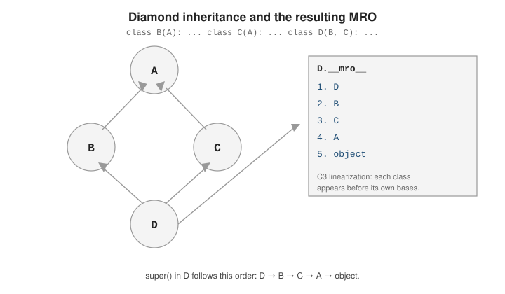

Advanced OOP Design
|
This content was generated with the assistance of AI and should be verified against the official documentation before being relied on in production. |
Two objects can be related by composition ("has-a") or inheritance ("is-a"). Python also allows a class to inherit from several parents at once, which makes the order methods are looked up in — the Method Resolution Order — a first-class thing to understand, not an implementation detail.
Composition ("has-a") vs. Inheritance ("is-a")
Inheritance models an is-a relationship (a Car is a Vehicle); composition models a has-a relationship (a Car
has an Engine). Prefer
composition whenever the relationship is really about reuse of behavior rather than a genuine
sub-type — it keeps the two classes independently testable and avoids coupling them through a shared
base. The tutorial’s
classes chapter covers both attribute lookup and the
inheritance mechanics this choice rests on.
# Inheritance ("is-a"): Car really is a kind of Vehicle -- it shares Vehicle's interface.
class Vehicle:
def __init__(self, speed):
self.speed = speed
def describe(self):
return f"moving at {self.speed} km/h"
class Car(Vehicle):
pass
# Composition ("has-a"): Car has an Engine -- it delegates to it instead of extending it.
class Engine:
def start(self):
return "engine started"
class Car2:
def __init__(self, engine):
self.engine = engine # composed, not inherited
def start(self):
return self.engine.start()
print(Car(80).describe()) # moving at 80 km/h
print(Car2(Engine()).start()) # engine startedIf Car2 later needs a different engine (electric instead of combustion), swapping the composed
object requires no change to Car2 itself — with inheritance, swapping a base class is far more
invasive. This is the core argument for "favor composition over inheritance" as a default.
Mixins, Multiple Inheritance, and the MRO
Python lets a class list several bases: class D(B, C):. A mixin is a small base class meant only to
be combined this way — it supplies one focused piece of behavior and is never instantiated on its own.
Multiple inheritance is documented in the tutorial’s
Multiple Inheritance section.
class JSONMixin:
def to_json(self):
import json
return json.dumps(self.__dict__)
class LoggingMixin:
def log(self, msg):
print(f"[{type(self).__name__}] {msg}")
class User(JSONMixin, LoggingMixin):
def __init__(self, name):
self.name = name
u = User("ada")
u.log("created") # [User] created
print(u.to_json()) # {"name": "ada"}The Method Resolution Order (__mro__)
When several bases could supply the same attribute, Python resolves it using the Method Resolution
Order — a single, deterministic ordering of the class and all its ancestors, computed by the C3
linearization algorithm. Inspect it with Cls.__mro__ or Cls.mro(). The algorithm itself is explained
in depth in The Python 2.3 Method Resolution Order, which still
describes the C3 algorithm CPython uses today.
Take the classic diamond: B and C both extend A, and D extends both B and C.

class A:
def who(self):
return "A"
class B(A):
def who(self):
return "B"
class C(A):
def who(self):
return "C"
class D(B, C):
pass>>> D.__mro__
(<class '__main__.D'>, <class '__main__.B'>, <class '__main__.C'>, <class '__main__.A'>, <class 'object'>)
>>> D().who()
'B'C3 guarantees that a class always appears before its own bases, and that the declared base order
(B before C in class D(B, C)) is preserved — so D is checked first, then B, then C, then
their shared ancestor A only once, and finally object.
super() in a Multi-Parent Hierarchy
super() does not mean "my direct parent" — it means "the next class in the MRO after the current
one". Each cooperative method calls super().__init__(...) and lets the MRO decide who runs next,
so every base in the chain gets a chance to run exactly once. This is documented under
the built-in super() reference.
class Base:
def __init__(self):
print("Base.__init__")
class Left(Base):
def __init__(self):
print("Left.__init__")
super().__init__() # goes to whatever is next in *this instance's* MRO
class Right(Base):
def __init__(self):
print("Right.__init__")
super().__init__()
class Bottom(Left, Right):
def __init__(self):
print("Bottom.__init__")
super().__init__()>>> Bottom()
Bottom.__init__
Left.__init__
Right.__init__
Base.__init__
<__main__.Bottom object at 0x...>The super() call in Left.__init__ calls Right.__init__, not Base.__init__ directly — because in
the MRO of Bottom, Right sits between Left and Base. Without cooperative super() calls,
Base.__init__ would run twice or not at all.
Delegation as an Alternative to Inheritance
Delegation wraps an internal instance and forwards calls to it explicitly, instead of inheriting its
interface. It gives full control over which operations are exposed, at the cost of writing the
forwarding methods by hand. The standard library’s own
collections.UserDict is built
this way — it wraps a real dict in a .data attribute rather than subclassing dict directly.
class ReadOnlyList:
"""Wraps a list, exposing only read operations -- no append/remove/etc."""
def __init__(self, items):
self._items = list(items) # composed instance, not inherited
def __getitem__(self, index):
return self._items[index] # forward to the wrapped list
def __len__(self):
return len(self._items) # forward to the wrapped list
def __iter__(self):
return iter(self._items) # forward to the wrapped list
r = ReadOnlyList([1, 2, 3])
print(len(r), list(r), r[0]) # 3 [1, 2, 3] 1
# r.append(4) # AttributeError: not forwarded, and that's the pointDelegation trades the automatic interface inheritance gives you for explicit control over the surface area — useful whenever a class should reuse an object’s behavior without exposing everything that object can do.
How the MRO Is Computed, and Cooperative Design
With multiple inheritance a class can reach the same ancestor along several paths (the "diamond"). Python resolves this with
the C3 linearisation: the MRO of a class is the class itself followed by a merge of its bases' MROs and the list of the
bases. The merge repeatedly takes the first class from the leftmost list whose head does not appear in the tail of any
other list. This gives two guarantees: a class always precedes its bases, and the left-to-right order of the bases in the
class statement is preserved. If no such head exists the class statement itself fails with a TypeError.
For Hybrid(Printed, Audio) the merge takes Printed first, then notices that Item is in the tail of the MRO of Audio and
postpones it, takes Audio and Digital, and only then Item and object. The sample prints the result and shows the
inconsistent case. It also shows what super() really means: not "my parent" but "the next class after this one in the
instance’s MRO", which is why each describe in the chain is visited exactly once even though Printed and Audio are
unrelated.
class Item:
def describe(self):
return ["Item"]
class Printed(Item):
def describe(self):
return ["Printed"] + super().describe()
class Digital(Item):
def describe(self):
return ["Digital"] + super().describe()
class Audio(Digital):
def describe(self):
return ["Audio"] + super().describe()
class Hybrid(Printed, Audio): # diamond: both lead back to Item
def describe(self):
return ["Hybrid"] + super().describe()
print([c.__name__ for c in Hybrid.__mro__])
print(Hybrid().describe()) # each class appears exactly once, in MRO order
try:
class Broken(Item, Printed): # Item before its own subclass: no consistent order
pass
except TypeError as exc:
print("TypeError:", str(exc).splitlines()[0])
# super() with no arguments = super(__class__, self): "the next class after this one in type(self).__mro__"
print(super(Printed, Hybrid()).describe()) # skips Hybrid and Printed, continues with AudioOutput:
['Hybrid', 'Printed', 'Audio', 'Digital', 'Item', 'object']
['Hybrid', 'Printed', 'Audio', 'Digital', 'Item']
TypeError: Cannot create a consistent method resolution order (MRO) for bases Item, Printed
['Audio', 'Digital', 'Item']Cooperative methods and mixins
A method that calls super().method() is cooperative: it does its part and passes control along the MRO. Cooperation only
works if everybody in the hierarchy takes part and agrees on the signature, so the convention is to accept **kwargs and
forward them, and let the last class (usually the one at the top of your hierarchy) stop the chain, because
object.__init__ accepts no arguments. A mixin is a small class that adds one behaviour (JsonMixin,
ComparableMixin), holds little or no state, is not meant to be instantiated alone and states what it needs from its
host (here to_dict() and _key()). Put mixins to the left of the main base so their methods win the MRO.
import json
class JsonMixin:
"""Adds behaviour; has no state of its own and relies on a tiny contract: to_dict()."""
def to_json(self):
return json.dumps(self.to_dict(), sort_keys=True)
class ComparableMixin:
def __lt__(self, other):
return self._key() < other._key()
def _key(self):
raise NotImplementedError
class Book(JsonMixin, ComparableMixin):
def __init__(self, title, year):
self.title, self.year = title, year
def to_dict(self):
return {"title": self.title, "year": self.year}
def _key(self):
return (self.year, self.title)
books = [Book("Ulysses", 1922), Book("Dune", 1965), Book("Emma", 1815)]
print([b.title for b in sorted(books)], books[0].to_json())
# cooperative __init__: every class forwards **kwargs and the chain visits all of them once
class Base:
def __init__(self, **kwargs):
print("Base.__init__", kwargs)
super().__init__() # object.__init__ accepts no arguments
class Tagged(Base):
def __init__(self, tags=(), **kwargs):
print("Tagged.__init__", tags)
super().__init__(**kwargs)
self.tags = list(tags)
class Priced(Base):
def __init__(self, price=0, **kwargs):
print("Priced.__init__", price)
super().__init__(**kwargs)
self.price = price
class Listing(Tagged, Priced):
pass
item = Listing(tags=["sf"], price=9)
print([c.__name__ for c in Listing.__mro__], item.tags, item.price)
# composition and delegation: __getattr__ forwards what the wrapper does not define
class LoggedShelf:
def __init__(self, inner):
self._inner = inner
self.calls = []
def __getattr__(self, name): # only called when normal lookup fails
attr = getattr(self._inner, name)
if callable(attr):
def logged(*args, **kwargs):
self.calls.append(name)
return attr(*args, **kwargs)
return logged
return attr
s = LoggedShelf([])
s.append("Dune"); s.append("Emma")
print(s.calls, s.count("Dune"), len(s._inner))Output:
['Emma', 'Ulysses', 'Dune'] {"title": "Ulysses", "year": 1922}
Tagged.__init__ ['sf']
Priced.__init__ 9
Base.__init__ {}
['Listing', 'Tagged', 'Priced', 'Base', 'object'] ['sf'] 9
['append', 'append', 'count'] 1 2In that output the initialisers ran in MRO order (Tagged, Priced, Base) even though Listing defines no __init__,
which is exactly what cooperative super() buys; the last line shows delegation, the alternative described next.
Choosing between inheritance, mixins, and composition
-
Inheritance couples the subclass to the parent’s implementation; prefer it when objects really are specialisations, and keep hierarchies shallow.
-
Mixins are a pragmatic way to share small, orthogonal behaviours; avoid mixins that need to know each other.
-
Composition and delegation keep the dependency explicit and replaceable (a test can pass a fake), and
__getattr__only fires when normal lookup fails, so the wrapper’s own attributes always win. Special methods such as__len__are looked up on the type, so they are not forwarded by__getattr__and must be written out. -
Abstract base classes (
abc.ABCwith@abstractmethod) document and enforce what subclasses must implement; instantiating a class with unimplemented abstract methods raisesTypeError.
Every snippet in this section was run with CPython 3.14.8 and the output shown is the real output.
See Also
-
Classes and Objects — the class and instance fundamentals this page builds on.
-
Operator Overloading — giving custom classes operator support via dunder methods.